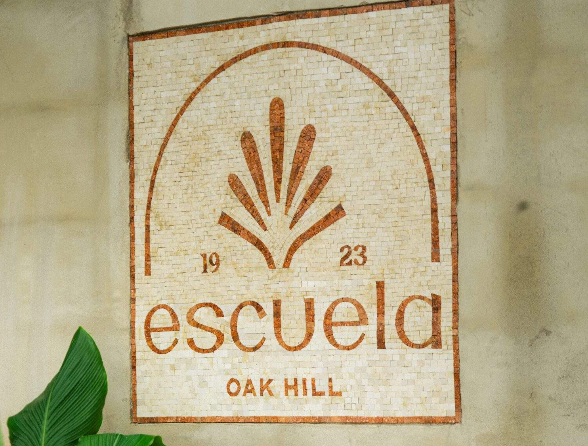
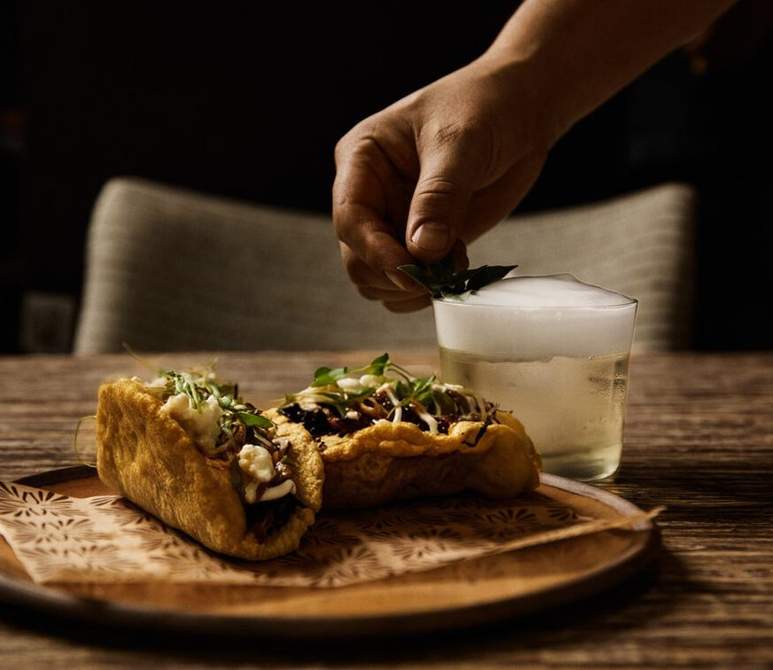

If you've headed out toward Dripping Springs, you've likely passed a low, nondescript limestone building tucked behind a stand of heritage oaks, right where the 290 and 71 split. For half a century it was the site of Oak Hill Elementary. Since September it's been Escuela, Oak Hill's buzzed-about farm-to-table Tex-Mex arrival, and another reminder that some of this city’s best new places stem from our deepest roots.

Opened in 1923, Oak Hill Elementary School was the community’s first formal schoolhouse. James Andrew Patton donated the land on which the school was built and sat on the school board for nearly 40 years. He lived next door, and his house still stands on the property. Patton also built a general store next door to the school (which longtime Austin locals may remember as the former home of Austin Pizza Garden).
At that time and for more than a century, Oak Hill was a community of farmers and cattle ranchers. Today, Escuela aims to honor that legacy through its own local, sustainable farming. The family behind the well-known Cabo Bob’s Burritos quick-service restaurant chain spent years converting the historic property into Escuela as an upscale agricultural-centered dining destination.
Upon arrival at the property, you see that commitment first hand as you make your way down the driveway through a 5-acre working farm that includes garden beds and a small orchard – all grown using organic and regenerative practices.
The property will eventually be home to three concepts. Fino is the first to open its doors. Dinner is served inside the schoolhouse and on a covered patio facing the gardens. The patio was cozy on the night we visited, but we took a table inside. The original limestone walls, warm woods, artisan-crafted decor and abundant plants create an ambiance that feels both authentic and elevated. You feel miles away from the highway nearby.
We sampled a few of the signature cocktails from the non-alcoholic side of the menu. All the options are made with a base of de-acoholized wine. I was not optimistic as my extensive taste testing has taught me most NA wines are terrible, but the cocktail team at Escuela has crafted blends that really work. They’ve also had fun with cocktail names drawn from old “school” jokes in a cheeky nod to the building’s former life.
I enjoyed the “Time Out,” which combined the wine with raspberry, chamomile, cinnamon, champagne acid and soda. Seven tried the “D.A.R.E.” which paired the wine with cherry, coffee, verjus rouge and smoked nogave (a more sustainable alternative to agave nectar).
The couple next to us raved about the alcoholic cocktails too, including one that arrived in a tiny smoker the staff had hand decorated with resin flowers. Little touches like that are everywhere.
While much of the menu looked delicious, we were limited to only a few dishes. I’ve been allergic to cow-based dairy since I was a child, and it’s typically very easy in Austin to request that cheese or cream be left out or served on the side. Not so at Escuela, at least not at this early opening stage, where it seems ingredients for many of the dishes had been pre-assembled. Even the fajitas, which are usually a safe, build-to-your-taste option, could not be ordered without cheese. I was heartbroken. We settled on a starter of guacamole, with a short rib main and a side of ember carrots. The guacamole’s salsa negra and the carrots both had a delicious smokiness that fits the vibe of the space. The short rib was good but not remarkable. (There are a lot of ridiculously good short rib entrees on Austin menus, so the bar is high!) The menu does rotate frequently to feature dishes made with seasonal ingredients grown on-site or sourced locally.
The best part of the evening was our conversation with the couple at the next table. I credit the Escuela team for curating an environment that makes chatting with your neighbors feel natural and fun.
Though the meal wasn’t as magical as we’d hoped, I’m not counting Escuela out for another visit. A second concept, Campo, is still in the works and will offer relaxed, outdoor dining under the oak trees and among the gardens. The Campo menu promises approachable twists on classic Tex-Mex barbecue, and the valet said they would also have a more casual cocktail program featuring what the valet described as “giant margaritas.”
The team is also taking a waitlist for Aula, a private event space housed in a separate building near the main restaurant.
Escuela is at 6240 W. U.S. 290, currently open Tuesday through Saturday from 5 to 10 p.m. Reservations can be made through OpenTable for parties up to six. Valet is mandatory. From Town Lake it's about a 10-15 minute drive.
